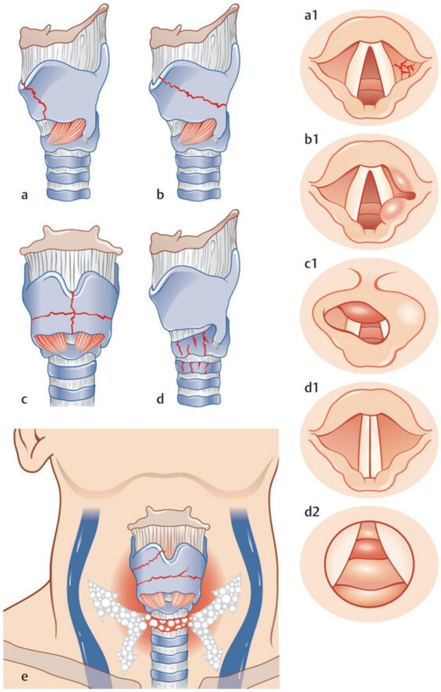
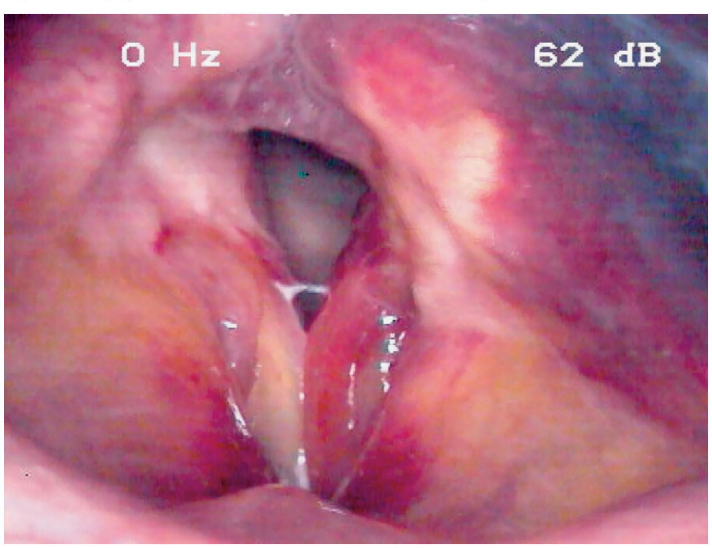

Сверка с PDF рубрикатора выполняется…
Травма гортани
Клинические рекомендации от 19.11.2024 · взрослые и дети
Основные положения
- Травма гортани опасна для жизни. Главным является проходимость дыхательных путей: дыхательная недостаточность может нарасти позже из-за отёка и гематомы. Госпитализации для наблюдения подлежат все пострадавшие, при лёгкой травме на 24–48 часов, особенно дети.
- При значительном или нарастающем отёке гортани показана трахеотомия в сознании. Интубации по возможности избегают, поскольку трубка может усугубить повреждение. При интубации используют трубку на размер меньше расчётной и сохраняют иммобилизацию шейного отдела позвоночника.
- Обследование при поступлении:
- ларингоскопия и видеоларингоскопия всем пациентам;
- пальпация шеи и грудной клетки для исключения подкожной эмфиземы;
- при подозрении на повреждение сосудов: КТ шеи с внутривенным контрастированием;
- при подозрении на повреждение глотки и пищевода: КТ пищевода с пероральным контрастированием;
- исключение повреждения шейного отдела позвоночника.
- Лечение консервативное при травме без повреждения хрящей или без смещения отломков, без нарастания дыхательной недостаточности и без гнойно-воспалительных изменений в тканях шеи:
- противоотёчная терапия;
- при признаках стеноза: ингаляции будесонида и кислород;
- голосовой покой;
- антирефлюксные препараты;
- при открытой ране: антибактериальная терапия и профилактика столбняка.
- Показания к хирургическому лечению:
- стеноз гортани в стадии декомпенсации;
- кровотечение;
- открытая или загрязнённая рана, инородные тела, нежизнеспособные ткани;
- выраженная или нарастающая эмфизема;
- перелом хрящей гортани со смещением, суживающим просвет.
Клиническая картина и классификация
Определения
- открытая рана, затрагивающая гортань: повреждение гортани снаружи или изнутри с нарушением целостности кожи и слизистой, целостности и функции органа;
- ушиб глотки, гортани: закрытое повреждение тупым предметом без нарушения целостности кожи и слизистой, с разрывом мелких сосудов и кровоизлиянием.
Кровотечение из горла: истечение крови изо рта или попадание её в дыхательные или пищепроводящие пути из источника в ротоглотке, гортаноглотке или гортани.
Этиология
Причины травмы гортани зависят от её вида.
- открытые раны чаще всего бывают ножевыми и огнестрельными;
- наружные тупые травмы возникают при ударе тупым предметом или кулаком в шею, в автомобильной аварии, при спортивной травме, попытке удушения и зачастую сопровождаются переломом хрящей и подъязычной кости, отрывом гортани, разрывом голосовых складок;
- внутренняя травма с кровотечением чаще носит ятрогенный характер (интубация, ИВЛ) или вызвана инородным телом (рыбья кость, куски пищи, зубные протезы);
- кровотечение из горла могут вызывать также злокачественные опухоли, последствия операций и манипуляций в глотке и гортани, в том числе эндоскопических исследований.
- перелом подъязычной кости, хрящей гортани и трахеи;
- отрыв гортани от трахеи или подъязычной кости;
- разрыв голосовых складок, смещение черпаловидных хрящей, парез гортани;
- кровоизлияния и гематомы со сдавлением дыхательных путей.
У детей гортань из гибких хрящей, устойчива к перелому, но подслизистый слой слабо прикреплён к надхрящнице: выше риск массивного отёка и гематомы, даже малая травма может повредить слизистую и заднюю стенку трахеи.
Классификация
- по этиологии: механические (в том числе ятрогенные), огнестрельные, химические, термические;
- по механизму: наружные, внутренние, тупые, острые (колотые, резаные);
- по кожной ране: открытые, закрытые;
- по проникновению в полость гортани: проникающие, непроникающие;
- изолированные и сочетанные.
Переломы хрящей гортани и их ларингоскопическая картина

Тяжесть травмы гортани по Schaefer раздел 1.5 КР
| Группа | Повреждения |
|---|---|
| 1 | незначительные эндоларингеальные гематомы без повреждения слизистой и хрящей |
| 2 | отёк, гематома, незначительные повреждения слизистой без обнажения хряща или перелом хряща без смещения |
| 3 | массивный отёк, большие разрывы слизистой, обнажённый хрящ, перелом хряща со смещением или неподвижность голосовых складок |
| 4 | как в 3 группе плюс серьёзные повреждения передних отделов, нестабильные переломы, две и более линии перелома или тяжёлые травмы слизистой |
| 5 | полный отрыв гортани от трахеи |
Огнестрельные ранения гортани: касательные без проникновения в полость; проникающие слепые или сквозные без повреждения окружающих структур; проникающие с повреждением пищевода, сосудисто-нервного пучка, позвоночника. Травмы глотки делят на наружные и внутренние, по причине, повреждающему фактору (тупые, колото-резаные, огнестрельные, химические и термические ожоги, инородные тела), отделу глотки и распространённости.
Клиническая картина
- нарушение дыхания является главным симптомом и может развиться сразу после травмы или позже из-за нарастания воспалительной инфильтрации, отёка, гематомы;
- дисфония и афония возникают при всех травмах гортани и особенно выражены при повреждении голосового отдела;
- боль бывает различной интенсивности: от дискомфорта (ощущения инородного тела) до выраженной боли в проекции гортани и глотки;
- дисфагия возникает при повреждении входа в гортань, парезе гортани, патологии глотки;
- кашель сопровождает травму не всегда: как правило, он возникает при инородном теле в гортани, внутреннем кровотечении, остром воспалении;
- подкожная эмфизема шеи свидетельствует о проникающем повреждении гортани или трахеи и может быстро распространиться на грудь и средостение;
- кровотечение угрожает жизни при открытой травме крупных сосудов, а также при внутреннем кровотечении, вызывающем аспирацию крови или гематому, суживающую просвет гортани и трахеи;
- проникающая рана имеет характерный вид: на выдохе из неё выходит пузырящийся кровавой пеной воздух, на вдохе воздух засасывается в рану с шипением;
- внутренняя травма может сопровождаться кровотечением из горла, которое проявляется кровохарканьем и истечением крови изо рта;
- при повреждении гортанных нервов развивается парез гортани.
Внутренние повреждения глотки, как правило, протекают легче наружных. Пациент обычно указывает место повреждения и предшествовавшие обстоятельства (эндоскопическое вмешательство, приём пищи, интубация). Сразу после травмы появляется боль в горле, усиливающаяся при глотании; нарушается глотание, при разрыве слизистой оболочки возможно кровотечение, а при нарастании отёка — нарушение дыхания.
У детей дыхательные нарушения развиваются быстрее и тяжелее; тупая травма гортани и трахеи может протекать неявно и имитировать обычные респираторные болезни.
В учебнике: повреждения гортани. Анатомия и физиология: гортань.
Диагностика
- анамнез, не позволяющий исключить травму шеи, и появление после неё боли, затруднения дыхания, изменения голоса, затруднения глотания, кровотечения, одышки;
- инспираторный стридор указывает на обструкцию надскладкового отдела гортани, вызванную отёком или гематомой;
- экспираторный стридор, как правило, возникает при обструкции подскладкового отдела гортани, например при травме трахеи;
- двухфазный стридор указывает на повреждение голосовой щели;
- рана либо отёк и гематома шеи, подкожная эмфизема;
- исчезновение крепитации гортани: при смещении гортани в стороны обычно ощущается «щелчок», его исчезновение возможно при фиксации или повреждении гортани;
- на выдохе из раны пузырящаяся кровавая пена, кровь в слюне;
- видеоларингоскопия: отёк, кровоизлияние, гематома, разрыв слизистой, деформация голосовой щели, нарушение подвижности складок;
- КТ: деформация контуров шеи, эмфизема, перелом хрящей, изменения просвета, раневой канал, инородные тела, нарушение пассажа контраста при ранении глотки и пищевода.
Выясняют механизм травмы, время после неё, жалобы и их динамику; если пациент без сознания, сведения получают у родственников или сопровождающих. Первичную оценку проводят по принципам расширенного жизнеобеспечения при травме (ATLS).
Осмотр раны и пальпация шеи
Всем пациентам оценивают рану: локализацию, размеры, глубину, края, отношение к сосудам и нервам. Исключают инородные тела, наружное или горловое кровотечение, повреждение дыхательных путей.
Пальпация шеи и грудной клетки всем пациентам для исключения подкожной эмфиземы.
Ларингоскопия
- все пациенты при поступлении в стационар.
Непрямая ларингоскопия зеркалом обязательна пациентам 12 лет и старше; у дошкольников и младших школьников часто невозможна из-за эмоциональной лабильности и глоточного рефлекса.
Травма гортани

Видеоларингоскопия и микроларингоскопия
- все пациенты: гибкие и ригидные эндоскопы с углом обзора 70° и 90°.
Оценивают слизистую, отёк, голосовую щель и подвижность складок, подскладковый отдел и трахею; при ране — возможен ретроградный осмотр. У детей предпочтительна фиброларингоскопия.
- 2–5 группы тяжести по Schaefer: уточнение диагноза, выбор метода и объёма лечения.
После обеспечения стойкой проходимости дыхательных путей: перстнечерпаловидное сочленение, слизистая, хрящевой каркас.
Ларингостробоскопия и электромиография гортани
При наличии оборудования исследования показаны всем пациентам для объективной оценки подвижности голосовых складок.
УЗИ гортани у детей
- дети с травмой гортани: УЗИ гортани в дополнение к ларингоскопии.
Видны подвижность складок и черпаловидных хрящей, их асимметрия, утолщение складок, переломы щитовидного хряща, гематомы.
КТ шеи и пищевода
- подозрение на повреждение сосудов: КТ шеи, в том числе с внутривенным контрастированием.
Рентгенография мягких тканей шеи малоинформативна: видны только отёк, эмфизема, перелом подъязычной кости.
КТ показывает- хрящевой каркас гортани и подъязычную кость;
- раневой канал и инородные тела;
- вовлечение сосудов шеи;
- распространённость эмфиземы.
- подозрение на повреждение глотки, пищевода: КТ пищевода с пероральным контрастированием при поступлении.
Эзофагоскопия
- проникающее ранение гортани или глотки: эзофагоскопия для исключения повреждения пищевода.
Исследование шейного отдела позвоночника
При любой травме гортани исключают повреждение шейного отдела позвоночника; при его выявлении показана немедленная консультация профильного специалиста.
МРТ
МРТ при осколочных и пулевых ранениях не рекомендуется: металлические инородные тела могут сместиться.
Общий анализ крови и коагулограмма
- кровопотеря или подозрение на неё: общий анализ крови;
- все пациенты: коагулограмма.
Пульсоксиметрия
Детям с признаками стеноза показана пульсоксиметрия для оценки степени дыхательной недостаточности и необходимости кислорода.
Посев отделяемого раны
При ранении гортани или глотки выполняют посев отделяемого раны с определением чувствительности к антибиотикам.
Лечение
- восстановление и поддержание проходимости дыхательных путей;
- остановка кровотечения, восполнение кровопотери;
- профилактика травматического шока;
- противоотёчная, антибактериальная, дезинтоксикационная, противовоспалительная терапия.
Первоочередное внимание следует уделять проходимости дыхательных путей: необходимо своевременно распознать обструкцию или угрозу её развития и предотвратить аспирацию.
Лечебная тактика по группам тяжести Schaefer раздел 3, комментарий КР
| Группа | Тактика |
|---|---|
| 1 группа | обязательна гибкая эндоскопия гортани; как правило, медикаментозно, без операции: системные кортикостероиды, антибиотики, антирефлюксные, увлажнение воздуха, голосовой покой |
| 2 группа | дополнительно прямая ларингоскопия и эзофагоскопия; наблюдение в динамике, повреждения могут прогрессировать; иногда трахеотомия; та же медикаментозная терапия |
| 3 группа | прямая ларингоскопия или эзофагоскопия в операционной; часто трахеотомия, как правило, операция при разрыве передней комиссуры, обширных рваных ранах, разрывах и неподвижности складок, обнажении хряща, переломах со смещением, подвывихе черпаловидного хряща |
| 4 группа | обязательны прямая ларингоскопия и эзофагоскопия; всегда трахеотомия; при операции — стент |
| 5 группа | тяжёлая дыхательная недостаточность: эндоскопия откладывается до восстановления проходимости; повреждения на уровне перстневидного хряща, перстнещитовидной мембраны, перстнетрахеального соединения: трахеотомия (может быть сложной), ларинготрахеопластика |
В КР тактика описана для групп «1, 2, 2, 3, 4»: в таблице группы 3–5 подписаны по смыслу описания (в КР это «2», «3» и «4»).
Консервативное лечение
- ссадины и поверхностные повреждения кожи;
- тупые наружные и внутренние травмы с отёком, ссадинами, гематомами без повреждения хрящей или без смещения отломков;
- нет нарастания дыхательной недостаточности и гнойного воспаления в тканях шеи.
Ссадины обрабатывают антисептиком и закрывают асептической повязкой; при стабильном состоянии — симптоматическая терапия.
- бензилдиметил-миристоиламино-пропиламмоний;
- повидон-йод;
- хлоргексидин.
- признаки стеноза верхних дыхательных путей: ингаляции лекарственных препаратов и кислорода.
После травмы и при эвакуации подают прохладный кислород через маску.
Будесонид ингаляционно- взрослые: раствор 1,0 мг 1–2 раза в день, 5–8 процедур;
- дети старше 6 месяцев: суспензия 0,25–0,5 мг 1–2 раза в день, 5 процедур.
Ингаляция длится, как правило, 10 минут, интервал между ингаляциями разных препаратов около 30 минут.
При открытой и закрытой травме проводится противоотёчная терапия: парентерально системные кортикостероиды и диуретики.
Голосовой режим: не кричать и не шептать не менее 2 дней; полный голосовой покой 1–2 суток, затем ограничение нагрузки. Исключить острую, солёную, горячую, холодную пищу, алкоголь, курение.
При ране или воспалении слизистой оболочки гортани и гортаноглотки назначают препараты для лечения язвенной болезни и ГЭРБ (A02BX) для защиты от желудочного содержимого.
Обезболивание
- все пострадавшие: анальгетики и НПВП, отдельно или в комбинации, в том числе НПВП с парацетамолом, метамизол натрия; также после операции.
- ибупрофен: с 3 месяцев свечи и суспензия, с 6 лет таблетки, с 12 лет капсулы;
- кетопрофен: с 6 лет гранулы, с 15 лет парентерально;
- метамизол натрия: амбулаторно не применяется, в стационаре только при отсутствии других разрешённых детям анальгетиков.
Хирургическую обработку и манипуляции в гортани выполняют под местной анестезией с учётом раны, выраженности боли и аллергологического анамнеза.
Обезболивание у взрослых таблица 1 в тексте КР
| Препарат | Разовая доза | Интервал | Максимум в сутки | Длительность |
|---|---|---|---|---|
| Парацетамол | 1 г в/в инфузия 15 мин | 4 ч | 4 г | 5–7 сут |
| Диклофенак | 75 мг в/м (в КР «75 мл») | 12 ч | 150 мг | 2 сут |
| Кеторолак | 30 мг в/в, в/м | 6 ч | 60–90 мг | 2 сут |
| Кетопрофен | 100 мг в/в, в/м | 12 ч | 200 мг | не более 2 сут |
| Лорноксикам | 8 мг в/в, в/м | 12 ч | 16 мг | 1–7 сут |
| Декскетопрофен | 50 мг в/в, в/м | 8–12 ч | 150 мг | 2 сут |
| Метамизол натрия | 500–1000 мг в/в, в/м | 8–12 ч | 2 г | 1–5 сут |
Обезболивание у детей таблица 2 в тексте КР
| Препарат | Разовая доза | Интервал | Максимум в сутки | Длительность |
|---|---|---|---|---|
| Парацетамол в/в | инфузия 15 мин: более 50 кг — 1000 мг; 10–50 кг — 15 мг/кг; менее 10 кг — 7,5 мг/кг; новорождённым до 1 месяца противопоказан | 4 ч | более 50 кг — 4 г; 33–50 кг — менее 60 мг/кг, не более 3 г; 10–50 кг — менее 60 мг/кг, не более 2 г; менее 10 кг — менее 30 мг/кг | 5–7 сут |
| Парацетамол внутрь, суспензия | 10–15 мг/кг | 6 ч | не более 60 мг/кг | 3–5 сут |
| Парацетамол ректально | 10–14 лет 350–500 мг; 5–10 лет 250–350 мг; 3–5 лет 150–200 мг; 1–3 года 100–150 мг; 3–12 мес 50–100 мг | 4–6 ч | менее 60 мг/кг | до 5 сут |
| Ибупрофен внутрь | старше 6 лет 200–400 мг; 4–6 лет 150 мг; 1–3 года 100 мг; 6–12 мес 50 мг; 3–6 мес 50 мг | 8 ч; 6–8 ч (в таблице КР не сопоставлены с возрастами построчно) | 12–17 лет 1 г; 6–12 лет 800 мг; 4–6 лет 450 мг; 1–3 года 300 мг; 6–12 мес 200 мг; 3–6 мес 150 мг | 4 сут |
| Ибупрофен ректально | 3–9 мес 60 мг; 9–24 мес 60 мг | 3–9 мес 8 ч; 9–24 мес 6 ч | 3–9 мес 180 мг; 9–24 мес 240 мг | не более 3 сут |
| Кетопрофен в/в, в/м | с 15 лет 100 мг | 12 ч | 200 мг | не более 2 сут |
| Кетопрофен внутрь, гранулы | старше 6 лет 40 мг | 8 ч | 120 мг | не более 2 сут |
| Метамизол натрия | с 15 лет 500–1000 мг в/в, в/м; 3 мес – 1 год 50–100 мг/10 кг в/м | 8–12 ч | с 15 лет 2 г | 3 сут |
Антибактериальная терапия
- открытая рана, осложнения, сочетанные повреждения: системная антибактериальная терапия (близость ротоглотки повышает риск инфекции).
Цефалоспорины III поколения (цефотаксим или цефтриаксон) и инфузионно метронидазол; при распространении эмфиземы в средостение и риске медиастинита — меропенем. Доза и длительность определяются клинической ситуацией.
Антибиотики при травмах шеи таблица 4 в тексте КР
| Препарат | Разовая доза | Кратность | Длительность |
|---|---|---|---|
| Цефотаксим в/в, в/м | взрослые и дети старше 12 лет (более 50 кг): 1 г; дети до 12 лет (менее 50 кг): 50–75 мг/кг; новорождённые: 25 мг/кг | 2 раза в сутки | 7–10 дней |
| Цефтриаксон в/в, в/м | взрослые 1–2 г; дети 2 мес – 12 лет: 20–100 мг/кг; новорождённые (с 15 дней), грудные и младшего возраста: 20–80 мг/кг | 1 раз в сутки | 7–10 дней |
| Метронидазол в/в капельно, 5 мл/мин | старше 12 лет: 500 мг; до 12 лет: 7,5 мг/кг | 3 раза в сутки | 7–10 дней |
Профилактика столбняка
При повреждении кожи и слизистой оболочки с загрязнением раны экстренная профилактика столбняка проводится как можно раньше, до 20-го дня после травмы: столбнячный анатоксин, противостолбнячный иммуноглобулин человека или сыворотка по инструкции.
Гемостатическая терапия
- наружное кровотечение или кровотечение из горла: гемостатические средства; при небольшом наружном кровотечении достаточно давящей асептической повязки.
- этамзилат: взрослым 250–500 мг в/в или в/м, затем по 250 мг каждые 4–6 ч; детям 10–15 мг/кг в сутки в 3–4 приёма, 5–10 дней;
- транексамовая кислота: в/в медленно 1 мл/мин (50 мг/мин); взрослым 10–15 мг/кг каждые 6–8 ч, детям старше 1 года 20 мг/кг в сутки — до остановки кровотечения;
- аминокапроновая кислота в/в капельно, взрослые: 4–5 г за первый час, при продолжающемся кровотечении по 1 г/ч не более 8 ч, при необходимости инфузии повторяют каждые 4 часа, максимум 30 г в сутки;
- аминокапроновая кислота, дети: 100 мг/кг за первый час, затем 33 мг/кг/ч; максимальная суточная доза 18 г/м²: до 1 года 3 г, 2–6 лет 3–6 г, 7–10 лет 6–9 г, от 10 лет как взрослым;
- аминокапроновая кислота при острой кровопотере у детей: до 1 года 6 г, 2–4 лет 6–9 г, 5–8 лет 9–12 г, 9–10 лет 18 г;
- длительность терапии аминокапроновой кислотой: 3–14 дней.
Хирургическое лечение
- стеноз гортани в стадии декомпенсации;
- кровотечение;
- открытая, загрязнённая рана, инородные тела, нежизнеспособные ткани, потеря мягких тканей, дефицит кожи;
- выраженная или нарастающая эмфизема;
- перелом хрящей гортани со смещением, суживающим просвет.
- значительный, особенно нарастающий отёк гортани: трахеотомия в сознании.
На месте травмы допустимо ввести трубку через рану в гортань или трахею, выполнить коникотомию или крикотиреоидотомию с последующей заменой на типичную трахеостому с подшиванием трахеи к коже. По возможности избегают интубации. Детям трахеотомию выполняют только под комбинированным ингаляционным наркозом.
При тяжёлых ранениях шеи применяют тактику контроля повреждений (damage control surgery): сокращённая первая операция, окончательное восстановление после стабилизации.
Первый этап- устранение асфиксии: интубация, типичная или атипичная трахеотомия;
- остановка кровотечения: сосудистый шов, перевязка, тугая тампонада, временное протезирование сонных артерий;
- защита тканей шеи от содержимого полых органов: швы или мазевые тампоны;
- иммобилизация шеи воротником Шанца при ранении позвоночника.
Интубационную трубку берут на размер меньше расчётной, сохраняя иммобилизацию шейного отдела.
- кровотечение из горла: тампонада раны, коагуляция сосуда, сшивание раны;
- массивное некупируемое: эндоваскулярная окклюзия или перевязка наружной сонной артерии;
- обширное повреждение гортани с неясным источником: перевязка верхней щитовидной или наружной сонной артерии после трахеотомии ниже места повреждения.
Кровотечение останавливают экстренно для профилактики геморрагического шока: давящая повязка и гемостатики, при неэффективности — лигатуры на сосуд в ране.
Хирургическая обработка раны
- поверхностная: обработка, санация, первичный шов;
- глубокая с повреждением мягких тканей: рассечение, иссечение, восстановление структур, дренирование, шов, противовоспалительная и антибактериальная терапия;
- обширные скальпированные и размозжённые: первичная обработка, первичная или отсроченная пластика кожи, восстановление структур, дренирование, по показаниям трансфузия.
Обработка ран гортани должна быть экономной и ранней: удаляют только легкодоступные инородные тела и явно нежизнеспособные ткани, слизистую оболочку максимально сохраняют. Раны гортани и трахеи до 0,5 см можно не ушивать и лечить дренированием.
- поверхностные раны, царапины, ссадины;
- раны с расхождением краёв менее 1 см;
- множественные мелкие раны без повреждения мышц и фасций;
- колотые раны без повреждения органов, сосудов, нервов.
Туалет раны, края можно свести пластырем.
Все раны дренируют доступными способами до прекращения отделяемого.
При инфицировании раны и гнойных осложнениях рану не ушивают до их купирования.
Переломы и разрывы гортани
Любые переломы хрящей гортани со смещением фиксируют. Сроки дискутабельны: одни авторы оперируют в первые 24–48 часов, другие откладывают операцию на неделю и более до уменьшения отёка, поэтому срок определяют индивидуально.
- разрыв слизистой двух и более анатомических областей, свободного края голосовых складок, переломы хрящевого каркаса: тиреоидотомия.
Слизистую восстанавливают, раны складок ушивают рассасывающимся швом 5/0 или 6/0; открытые хрящи закрывают. При переломе более чем в 3 мм от передней комиссуры также выполняется срединная тиреоидотомия.
Смещённые черпаловидные хрящи восстанавливают по степени повреждения; изолированные рваные раны укрывают слизистой.
Проникающее ранение с повреждением хрящей без значительного смещения: ларинготрахеопластика местными тканями после типичной трахеотомии; при необходимости наружный и эндоскопический доступ, в просвет на несколько дней вводят пальчиковый обтуратор.
- значительное разрушение и смещение хрящей;
- разрывы тканей в области передней комиссуры;
- выраженная рубцовая деформация просвета гортани.
В первые дни вводят тампон по Микуличу с мазью на основе хлорамфеникола, затем силиконовый протез. Оскольчатые переломы часто требуют стента и наружной фиксации; при стабильных переломах с минимальным повреждением слизистой стентирования избегают.
Перелом подъязычной кости с отрывом гортани: ларингогиоидопексия; отрыв гортани от трахеи: трахеоларингопексия (при низком трахеотомическом разрезе трахея втягивается за грудину). Отрыв гортани, как правило, сопровождается пневмотораксом, который необходимо выявить и лечить.
Диетотерапия
Общая восстановительная диета, полноценная по составу, кроме пациентов с заболеваниями, требующими коррекции диеты (сахарный диабет и другие). Пациентам с зондом или гастростомой проводится энтеральное или парентеральное питание.
- ранении гортаноглотки, пищевода;
- выраженном отёке гортаноглотки;
- невозможности питания через естественные пути.
Техника операций в учебнике: трахеотомия и трахеостомия, коникотомия.
Алгоритм действий врача при травме гортани: затруднённое (нестабильное) дыхание
- 1
Подозрение на травму гортани; физикальный осмотр
Подозрение на травму гортани. Проводят физикальный осмотр: оценивают рану, пальпируют шею и грудную клетку для исключения подкожной эмфиземы. Первоочередное внимание уделяют проходимости дыхательных путей.
- 2
Затруднённое (нестабильное) дыхание
Дыхание затруднено или нестабильно. Инспираторный стридор указывает на обструкцию надскладкового отдела (отёк, гематома), экспираторный на обструкцию подскладкового отдела и трахеи, двухфазный на повреждение голосовой щели.
- 3
Трахеостомия
Выполняется трахеостомия. Значительный, особенно нарастающий отёк гортани служит показанием к трахеотомии в сознании. Интубации по возможности избегают; если она необходима, берут трубку на размер меньше расчётной и сохраняют иммобилизацию шейного отдела позвоночника.
Детям трахеотомию выполняют только под комбинированным ингаляционным наркозом.
- 4
Компьютерная томография
После восстановления проходимости дыхательных путей выполняется компьютерная томография шеи. Она выявляет перелом хрящей, изменения просвета гортани, эмфизему, раневой канал и инородные тела.
Есть ли перелом хрящей гортани со смещением?
- 5
Перелом хрящей без смещения
Перелом хрящей гортани без смещения отломков.
- 6
Прямая ларингоскопия, эзофагоскопия
Выполняются прямая ларингоскопия и эзофагоскопия для оценки слизистой оболочки гортани и исключения повреждения глотки и пищевода.
Цела ли слизистая оболочка?
- 7
Неповреждённая слизистая оболочка
Слизистая оболочка не повреждена.
- 8
Наблюдение
конец алгоритмаПроводится наблюдение. Лечение консервативное: противоотёчная терапия, голосовой покой, антирефлюксные препараты; при открытой ране добавляют антибактериальную терапию и профилактику столбняка.
- 9
Разрыв слизистой оболочки
Выявлен разрыв слизистой оболочки гортани. Показано хирургическое лечение.
- 10
Тиреотомия или открытая репозиция и внутренняя фиксация, ушивание слизистой оболочки
конец алгоритмаВыполняется тиреотомия или открытая репозиция и внутренняя фиксация с ушиванием слизистой оболочки. Раны складок ушивают рассасывающимся швом 5/0 или 6/0, открытые хрящи закрывают.
- 11
Перелом хрящей со смещением
Перелом хрящей гортани со смещением. Любые переломы хрящей со смещением фиксируют; сроки операции дискутабельны (в первые 24–48 часов или через неделю и более, до уменьшения отёка), поэтому определяются индивидуально.
- 12
Прямая ларингоскопия, эзофагоскопия
Выполняются прямая ларингоскопия и эзофагоскопия для оценки слизистой оболочки гортани и исключения повреждения глотки и пищевода.
Цела ли слизистая оболочка?
- 13
Неповреждённая слизистая оболочка
Слизистая оболочка не повреждена.
- 14
Открытая репозиция и внутренняя фиксация
конец алгоритмаВыполняется открытая репозиция и внутренняя фиксация отломков хрящей гортани.
- 15
Разрыв слизистой оболочки
Выявлен разрыв слизистой оболочки.
- 16
Тиреотомия или открытая репозиция и внутренняя фиксация, ушивание слизистой оболочки
конец алгоритмаВыполняется тиреотомия или открытая репозиция и внутренняя фиксация с ушиванием слизистой оболочки. Смещённые черпаловидные хрящи восстанавливают по степени повреждения.
Алгоритм действий врача при травме гортани: свободное (стабильное) дыхание
- 1
Подозрение на травму гортани; физикальный осмотр
Подозрение на травму гортани. Травма гортани опасна для жизни, главным остаётся проходимость дыхательных путей. Проводят физикальный осмотр: оценивают рану, пальпируют шею и грудную клетку для исключения подкожной эмфиземы, выполняют ларингоскопию.
- 2
Свободное (стабильное) дыхание
Дыхание свободное, стабильное. Однако дыхательная недостаточность может нарасти позже из-за отёка и гематомы, поэтому проходимость дыхательных путей необходимо контролировать. Госпитализации для наблюдения подлежат все пострадавшие.
- 3
Компьютерная томография
Выполняется компьютерная томография шеи. Она выявляет деформацию контуров шеи, эмфизему, перелом хрящей, изменения просвета гортани, раневой канал и инородные тела.
Есть ли перелом хрящей гортани со смещением?
- 4
Перелом хрящей без смещения
Перелом хрящей гортани без смещения отломков. Тактика определяется состоянием голоса.
Как изменён голос?
- 5
Нормальный голос
Голос не изменён. Дыхание свободное, смещения хрящей нет, поэтому показаны наблюдение и консервативная терапия.
- 6
Наблюдение
конец алгоритмаПроводится наблюдение с контролем проходимости дыхательных путей. Консервативное лечение включает противоотёчную терапию, голосовой покой и антирефлюксные препараты; при открытой ране назначают антибактериальную терапию и профилактику столбняка. При признаках стеноза применяют ингаляции будесонида и кислород.
- 7
Хрипота, сиплость голоса
Голос хриплый, сиплый: возможно повреждение слизистой оболочки гортани. Для его оценки необходим эндоскопический осмотр.
- 8
Фиброоптическая назоларингоскопия
Выполняется фиброоптическая назоларингоскопия. При видеоларингоскопии выявляют отёк, кровоизлияние, гематому, разрыв слизистой оболочки, деформацию голосовой щели и нарушение подвижности складок.
Цела ли слизистая оболочка гортани?
- 9
Неповреждённая слизистая оболочка
Слизистая оболочка не повреждена.
- 10
Наблюдение
конец алгоритмаПроводится наблюдение. Лечение консервативное: противоотёчная терапия, голосовой покой, антирефлюксные препараты. Небольшие непрогрессирующие гематомы при целой слизистой оболочке, как правило, рассасываются; большие или нарастающие могут потребовать трахеотомии.
- 11
Разрыв слизистой оболочки
Обнаружен разрыв слизистой оболочки гортани. Это показание к хирургическому лечению.
- 12
Трахеостомия в сознании
Перед операцией выполняется трахеостомия в сознании: значительный, особенно нарастающий отёк гортани служит показанием к трахеотомии в сознании. Интубации по возможности избегают, так как трубка может усугубить повреждение.
- 13
Тиреотомия или открытая репозиция и внутренняя фиксация, ушивание слизистой оболочки
конец алгоритмаВыполняется тиреотомия или открытая репозиция и внутренняя фиксация с ушиванием слизистой оболочки. Раны складок ушивают рассасывающимся швом 5/0 или 6/0, открытые хрящи закрывают.
- 14
Перелом хрящей со смещением
Перелом хрящей гортани со смещением. Любые переломы хрящей со смещением фиксируют; смещение, суживающее просвет, является показанием к хирургическому лечению.
- 15
Трахеостомия в сознании
Выполняется трахеостомия в сознании. Детям трахеотомию проводят только под комбинированным ингаляционным наркозом.
- 16
Прямая ларингоскопия, эзофагоскопия
После обеспечения дыхательных путей выполняют прямую ларингоскопию и эзофагоскопию, чтобы оценить состояние слизистой оболочки гортани и исключить повреждение глотки и пищевода.
Цела ли слизистая оболочка?
- 17
Неповреждённая слизистая оболочка
Слизистая оболочка не повреждена.
- 18
Открытая репозиция и внутренняя фиксация
конец алгоритмаВыполняется открытая репозиция и внутренняя фиксация отломков хрящей гортани. Сроки операции дискутабельны (в первые 24–48 часов или через неделю и более, до уменьшения отёка), поэтому определяются индивидуально.
- 19
Разрыв слизистой оболочки
Выявлен разрыв слизистой оболочки.
- 20
Тиреотомия или открытая репозиция и внутренняя фиксация, ушивание слизистой оболочки
конец алгоритмаВыполняется тиреотомия или открытая репозиция и внутренняя фиксация с ушиванием слизистой оболочки. Смещённые черпаловидные хрящи восстанавливают по степени повреждения.
Медицинская реабилитация и диспансерное наблюдение. Показания к госпитализации
Показания к госпитализации
Госпитализации для наблюдения за проходимостью дыхательных путей подлежат все пациенты с травмой гортани и глотки. При лёгких травмах, которые могут прогрессировать (отёк, гематома), наблюдение в стационаре длится 24–48 часов, особенно у детей.
У детей травма гортани опасна для жизни риском кардиогенного шока из-за особенностей иннервации вследствие- брадикардии, аритмии;
- падения артериального давления;
- остановки сердца.
Небольшие непрогрессирующие гематомы при целой слизистой оболочке, как правило, рассасываются, большие или нарастающие могут потребовать трахеотомии.
Все, кто оказывает помощь на догоспитальном и госпитальном этапах, должны знать признаки обструкции дыхательных путей и владеть навыками поддержания дыхания с защитой шейного отдела позвоночника; на всех уровнях должны быть возможности интубации, коникотомии, трахеотомии.
Медицинская реабилитация и диспансерное наблюдение
После тупой травмы с повреждением гортани, а также после ларинготрахеопластики без ларингостомы или после её закрытия показан повторный осмотр оториноларинголога в поликлинике, при нарушении голоса консультация фониатра.
Пациентов с открытой раной шеи и сформированной ларингостомой наблюдает оториноларинголог стационара.
После выписки лечение продолжается амбулаторно под наблюдением оториноларинголога.
Повторный осмотр оториноларинголога через 1 месяц, затем раз в 3 месяца в течение года для выявления показаний к реконструктивной операции.
При осмотре выполняют- видеоларингоскопию;
- ларингостробоскопию;
- по показаниям исследование функции внешнего дыхания.
Сроки деканюляции и восстановления просвета определяют индивидуально.
Для профилактики ятрогенной травмы при ИВЛ, ЭГДС, бронхоскопии интубацию и эндоскопию выполняют максимально аккуратно, при трудной интубации используют видеоларингоскоп. Специфической профилактики других травм гортани и глотки нет.
- системные: пожилой возраст, иммунодефицит, кахексия, инфекция, онкологический процесс, нарушения углеводного обмена, коллагенозы;
- местные: повреждение пищевода, сосудисто-нервного пучка, позвоночника, флегмона шеи, медиастинит, повторная травма, инфекция, инородные тела.
При первичной пластике и восстановлении просвета грубой деформации, как правило, нет, но травмы гортани и трахеи часто инвалидизируют и могут потребовать повторных реконструктивных операций.
Коды МКБ-10
Источник и актуальность
Журнал сверки
Неточности и противоречия в тексте рекомендации
- В разделе 3 тактика по тяжести травмы описана для групп «1, 2, 2, 3, 4», а классификация Schaefer в разделе 1.5 содержит 5 групп: нумерация в лечебном разделе сдвинута. На странице группы подписаны по смыслу описания, с пометкой под таблицей.
- Таблица 1: разовая доза диклофенака записана как «75 мл в/м» — по смыслу 75 мг.
- Таблица 2: для парацетамола внутривенно у детей максимальные суточные дозы заданы для пересекающихся весовых групп «33–50 кг» и «10–50 кг» с разными пределами (3 г и 2 г). Сверяйте с инструкцией.